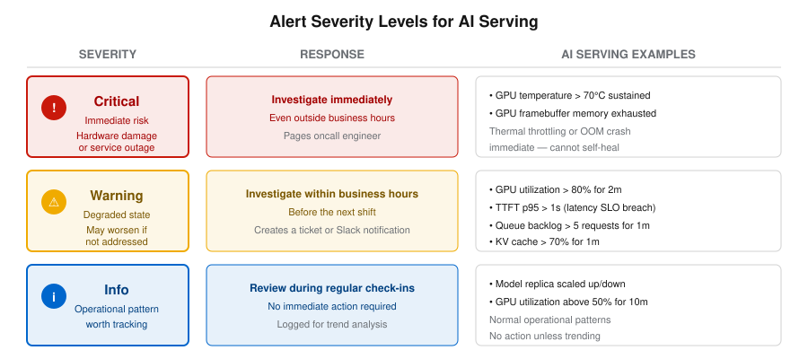

Alert Purpose and Severity
Most organizations have too many alerts, not too few. The result is that engineers stop trusting the alerting system, start ignoring notifications, and eventually miss the one alert that really matters. Good alerting starts with understanding what an alert is for and being disciplined about when to create one.
The Purpose of an Alert
An alert should tell a human to take an action. That is it. If there is no action to take, it should not be an alert — it should be a dashboard panel.
This sounds obvious, but it is the most commonly violated principle in monitoring. Teams create alerts for every metric that has a threshold, every pod that restarts, every spike that looks concerning on a graph. The result is an alerting system that cries wolf so often that real incidents get lost in the noise.

The Alert Quality Spectrum
Not all alerts are equally useful. Consider the following progression from useless to actionable:
| Alert Expression | Quality | Why |
|---|---|---|
CPU > 50% for 1 minute |
Poor |
Too sensitive, fires constantly, measures the wrong resource for inference workloads |
GPU utilization > 95% for 5 minutes |
Better |
Measures the right resource with a reasonable stabilization window, but what action should the engineer take? |
TTFT p95 > 1 second for 2 minutes |
Good |
Tied to a user-facing SLO — when this fires, users are experiencing slow responses |
Requests waiting > 5 for 1 minute |
Best |
Directly measures user impact, points to a clear action (scale up or throttle traffic), and identifies exactly where to look |
Each step in this progression improves along the same axis: moving from raw resource metrics toward user-visible impact. A busy GPU is not a problem unless users are affected. Queue depth directly measures user impact and tells you what to do about it.
Three Questions for Every Alert
Before creating any alert, ask these three questions:
1. "What action will someone take when this fires?"
If the answer is "look at a dashboard," that is not an action — that is investigation. What does the engineer do after looking at the dashboard? Scale up replicas? Restart a pod? Throttle incoming traffic? If there is no concrete action, the condition belongs on a dashboard panel, not in an alert rule.
2. "Can this fire when nothing is actually wrong?"
If yes, the threshold or stabilization window is too aggressive. False positives cause alert fatigue — people stop trusting alerts and start ignoring them. The next real incident gets missed.
3. "Will this catch the problem in time to do something about it?"
If the alert fires only after users have been suffering for 30 minutes, it is too slow. Balance speed of detection with noise tolerance. An alert that fires in 1 minute but produces false positives 40% of the time is worse than an alert that fires in 5 minutes but is right 95% of the time.
Alert Severity Levels
Not all problems deserve the same urgency of response. A well-defined severity framework ensures that the right problems get the right level of attention.
| Severity | What It Means | Expected Response | Example |
|---|---|---|---|
|
Something noteworthy happened, no action needed now |
Review during next business day |
"Model deployment completed successfully" |
|
A threshold is approaching; investigate before it becomes critical |
Respond within hours |
"GPU utilization > 80% for 2 minutes" |
|
An SLO is being violated or hardware is at risk |
Respond immediately (minutes) |
"GPU temperature > 70C for 1 minute" |
The distinction between warning and critical is the distinction between "this needs attention soon" and "this needs attention now."
In practice, critical alerts are the ones that wake someone up at 3 AM.
Warning alerts are the ones that get reviewed at the start of the next business day or shift.
Alert Fatigue: The Problem and the Cure
Alert fatigue is the number-one cause of missed real incidents in production systems. The pattern is predictable:
-
Too many alerts fire — many of them false positives or low-severity issues marked as critical
-
Engineers start ignoring alerts because most are not actionable
-
A real critical alert fires
-
Nobody notices because it is buried in a stream of noise
The cure is straightforward: make critical alerts rare and always actionable.
If an engineer gets paged at 3 AM for a critical alert, there must be a real problem requiring immediate action.
If 50% of 3 AM pages turn out to be false positives, the team loses trust in the alerting system entirely.
The most dangerous alerting configuration is one where everything is marked critical. When everything is critical, nothing is critical. Engineers develop the habit of dismissing all alerts, and real incidents go unnoticed.
|
Our Lab Approach
In the exercises later in this chapter, you will create five alert rules with a deliberate severity distribution:
-
3 warning alerts: GPU utilization, inference queue backlog, KV cache usage, and time to first token latency
-
1 critical alert: GPU temperature
The critical alert is reserved for genuine hardware risk — a GPU overheating can cause thermal throttling, performance degradation, and in extreme cases, hardware damage. Everything else is warning-level: important enough to investigate, but not worth waking someone up at 3 AM.
This ratio — many warnings, few criticals — is the hallmark of a healthy alerting configuration. In production, aim for 90% or more of firing alerts to result in a concrete action. If your team is ignoring half the alerts they receive, the alerting design needs work, not the team.